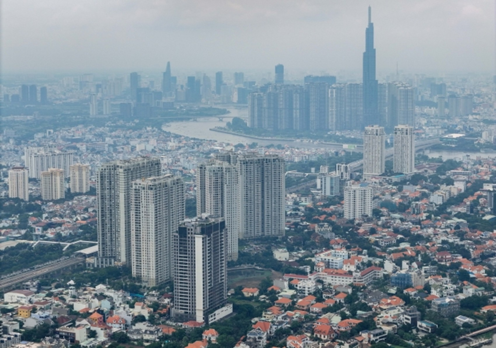

Mỹ – Iran đạt thỏa thuận về ngừng bắn, mở cửa eo biển Hormuz trong hai tuần
Mỹ và Iran đồng ý ngừng bắn trong hai tuần, Tehran sẽ cho phép tàu thuyền đi qua eo biển Hormuz trong thời gian này "với sự điều phối từ lực lượng vũ trăng".
Dù được xác định là lĩnh vực ưu tiên, nhà ở xã hội hiện vẫn chưa thể tiếp cận tín dụng ưu đãi, buộc phải vay thương mại với chi phí cao, theo HoREA.
Theo phản ánh của Hiệp hội Bất động sản TP HCM (HoREA), nhiều năm qua, các chủ đầu tư dự án nhà ở xã hội gần như không thể tiếp cận nguồn vốn từ Ngân hàng Chính sách xã hội - kênh được thiết kế để cung cấp tín dụng ưu đãi cho phân khúc này. Thay vào đó, doanh nghiệp buộc phải vay vốn thương mại với lãi suất cao hơn đáng kể, làm gia tăng chi phí đầu tư.
Ông Lê Hoàng Châu, Chủ tịch HoREA, cho biết các quy định pháp luật về nhà ở đều xác định chủ đầu tư dự án được hưởng chính sách tín dụng ưu đãi. Tuy nhiên, việc triển khai trên thực tế lại gặp vướng do các quy định dưới luật chưa đồng bộ.
Cụ thể, Nghị định 100 quy định trong giai đoạn đến năm 2030, Ngân hàng Chính sách xã hội chưa thực hiện cho vay đối với chủ đầu tư dự án nhà ở xã hội. Quy định này kế thừa từ các văn bản trước đó, khiến tình trạng thiếu vốn ưu đãi cho doanh nghiệp kéo dài từ năm 2015 đến nay.
Trong khi đó, chính sách hiện hành lại tập trung hỗ trợ người mua nhà thông qua các khoản vay ưu đãi, với mục tiêu giúp nhóm thu nhập thấp tiếp cận nhà ở. Theo HoREA, cách tiếp cận này đang tạo ra sự mất cân đối khi bỏ trống khâu cung - yếu tố quyết định trực tiếp đến giá thành và quy mô phát triển dự án.

Lãnh đạo một doanh nghiệp phát triển nhà ở xã hội tại TP HCM cho biết ba điểm nghẽn lớn nhất của phân khúc này hiện nay là "thiếu đất, thiếu vốn và thiếu động lực", trong đó vốn giữ vai trò quyết định đến khả năng phát triển nguồn cung. Chi phí tài chính cao, trong khi thủ tục kéo dài, đang làm suy giảm tính khả thi của nhiều dự án, khiến tiến độ triển khai bị chậm lại.
Theo doanh nghiệp, tình trạng kẹt vốn ngày càng rõ nét khi chủ đầu tư vừa không thể tiếp cận nguồn vay ưu đãi, vừa gặp khó trong việc vay thương mại với chi phí hợp lý. Trong khi đó, các ngân hàng thương mại cũng không mặn mà với nhà ở xã hội do biên lợi nhuận thấp và thời gian thu hồi vốn kéo dài. Trong bối cảnh nhu cầu nhà ở xã hội tại các đô thị lớn tiếp tục gia tăng, điểm nghẽn về vốn không chỉ ảnh hưởng đến tiến độ dự án mà còn trực tiếp kìm hãm khả năng mở rộng nguồn cung. Nếu không sớm tháo gỡ cơ chế tín dụng cho phía cung, đặc biệt là chủ đầu tư, mục tiêu phát triển phân khúc này với quy mô lớn sẽ khó đạt như kỳ vọng.
HoREA cũng cho rằng cần sớm tháo gỡ các vướng mắc về cơ chế để triển khai hiệu quả nguồn vốn ưu đãi cho nhà ở xã hội, đặc biệt với phía chủ đầu tư. Việc này không chỉ giúp giảm chi phí đầu vào mà còn góp phần kéo giảm giá bán, qua đó cải thiện khả năng tiếp cận nhà ở của người thu nhập thấp.
Ở góc độ quản lý, nhiều chuyên gia nhận định việc chưa mở rộng tín dụng ưu đãi cho chủ đầu tư xuất phát từ yêu cầu kiểm soát rủi ro hệ thống và bảo toàn nguồn lực ngân sách. Khác với người mua nhà, nhóm vay vốn nhỏ lẻ, phân tán, thì các dự án bất động sản thường có quy mô lớn, thời gian triển khai kéo dài và chịu tác động mạnh từ biến động thị trường. Nếu dòng vốn ưu đãi được phân bổ trực tiếp cho chủ đầu tư nhưng dự án chậm tiến độ hoặc không hiệu quả, rủi ro nợ xấu có thể phát sinh với quy mô lớn, gây áp lực lên hệ thống tài chính.
Nguồn vốn ưu đãi hiện nay cũng còn hạn chế, trong khi nhu cầu hỗ trợ rất lớn. Việc mở rộng cho vay đồng thời cả người mua và chủ đầu tư có thể dẫn đến tình trạng dàn trải nguồn lực, làm giảm hiệu quả chính sách. Do đó, cơ quan quản lý có xu hướng ưu tiên hỗ trợ phía cầu, nhằm đảm bảo mục tiêu an sinh trực tiếp.
Tuy nhiên, để hài hòa giữa mục tiêu kiểm soát rủi ro và thúc đẩy nguồn cung, nhiều ý kiến cho rằng có thể thiết kế cơ chế tín dụng theo hướng "có điều kiện" thay vì mở rộng đại trà. Cụ thể, có thể xem xét cho phép chủ đầu tư tiếp cận một phần vốn ưu đãi nhưng gắn với các tiêu chí chặt chẽ như: dự án đã hoàn tất pháp lý, có quỹ đất sạch, tiến độ triển khai rõ ràng và được kiểm soát dòng tiền theo từng giai đoạn. Bên cạnh đó, việc giải ngân có thể thực hiện theo tiến độ xây dựng, kết hợp cơ chế giám sát sử dụng vốn để hạn chế rủi ro.
Ngoài ra, thay vì mở rộng tín dụng ưu đãi đại trà, có thể áp dụng các giải pháp gián tiếp như hỗ trợ một phần lãi suất cho khoản vay thương mại hoặc ưu tiên vốn theo từng dự án đủ điều kiện. Cách tiếp cận này giúp giảm chi phí vốn cho doanh nghiệp nhưng vẫn kiểm soát được rủi ro và không tạo áp lực lớn lên ngân sách.

Mỹ và Iran đồng ý ngừng bắn trong hai tuần, Tehran sẽ cho phép tàu thuyền đi qua eo biển Hormuz trong thời gian này "với sự điều phối từ lực lượng vũ trăng".

Người dân Iran tập trung trên đường phố Tehran, vậy có và hô khẩu hiệu sau khi lệnh ngừng bắn hai tuần với Mỹ được công bố.

Nằm ở bộ nam eo biển Hormuz, cách Iran gần 34 km, bán đảo Musandam của Oman đang chứng kiến những hệ lụy về kinh tế và đời sống khi xung đột bùng phát.